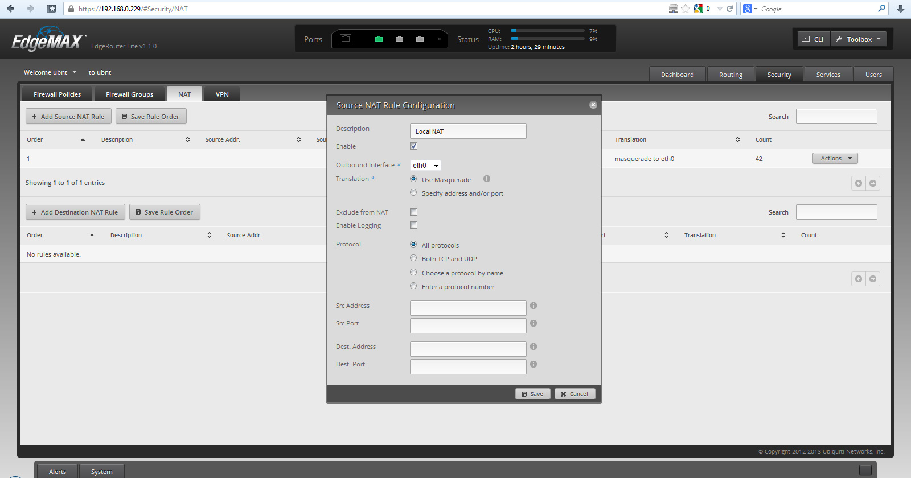
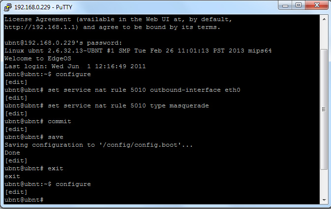
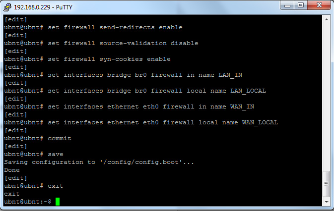
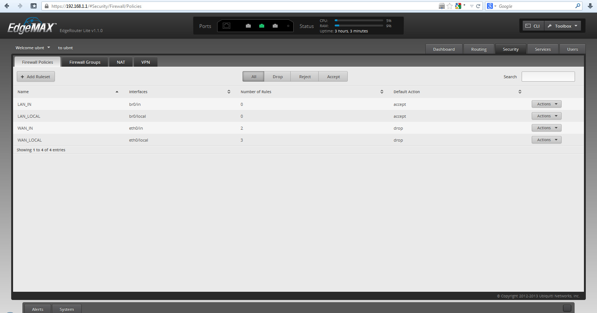
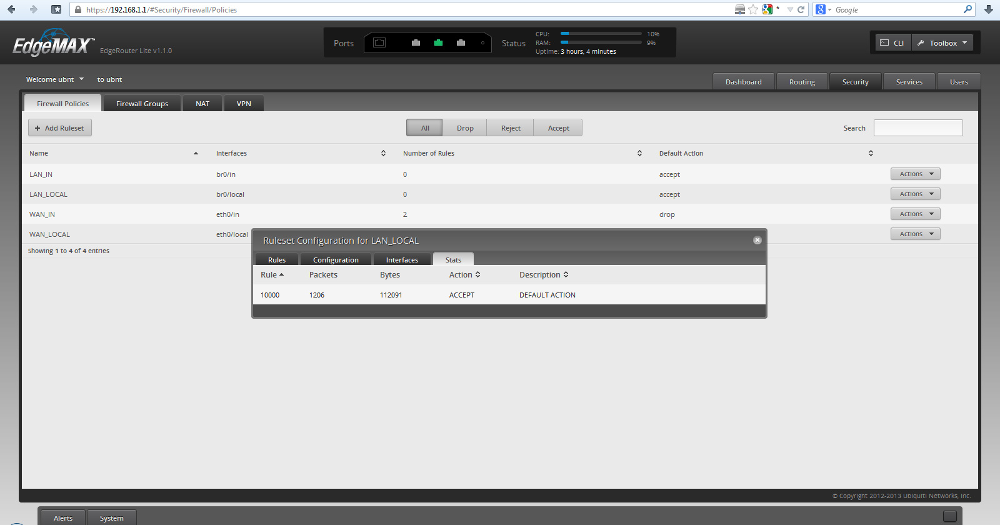

Базовые настройки Ubiquiti EdgeOS: настройка NAT и Firewall
После того, как EdgeRouter (маршрутизатор), работающий под управлением сетевой операционной системы Ubiquiti EdgeOS, настройкой которого мы занимаемся, получил доступ в интернет и локальная сеть была настроена, нам необходимо обеспечить выход в глобальную сеть интернет, для всех локальных устройств, объединенных в LAN.
Поэтому в данной статье, мы рассмотрим настройку таких параметров как:
настройка NAT;
настройка Firewall;
Делается это для того, чтобы дать возможность нескольким компьютерам, иметь доступ к сети интернет под одним внешним IP адресом, выделяемым провайдером и оградить локальную сеть от возможных атак из вне.
Настройка NAT
И начнем мы с того, что настроем преобразование сетевых адресов или попросту NAT (Network Address Translation).
Настроить NAT можно через GUI, для этого необходимо перейти на вкладку Security и там выбрать раздел NAT. После чего, надать кнопку + Add Source NAT Rule. И в открывшемся окне, заполнить поля, следующим образом:
Description - примечание, например Local NAT
Enable - поставить галочку
Outbound Interface - выбрать интерфейс, к которому у нас подключен провайдер, у нас eth0
Translation - выбрать Use Masquerade
Protocol - выбрать All protocols
Остальные поля, не трогаем.

Сохраняем настройки, как всегда, кнопкой Save.
Эту же процедуру, можно провести и при помощи консоли, для этого нужно набрать следующий ряд команд:
ubnt@ubnt:~$ configure
[edit]
ubnt@ubnt# set service nat rule 5010 outbound-interface eth0
[edit]
ubnt@ubnt# set service nat rule 5010 type masquerade
[edit]
ubnt@ubnt# commit
[edit]
ubnt@ubnt# save
Saving configuration to '/config/config.boot'...
Done
[edit]
ubnt@ubnt# exit
exit
ubnt@ubnt:~$ configure
[edit]
ubnt@ubnt#

Настройка Firewall
Одним из основных рубежей безопасности вашей локальной сети, является Firewall, поэтому не стоит пренебрегать его настройкой. Ниже я приведу ряд основных правил для конфигурации межсетевого экрана для EdgeRouter (маршрутизатор), работающим под управлением сетевой операционной системы Ubiquiti EdgeOS
Настроить Firewall можно как из web-интерфейса, так и из командной строки. Но учитывая что правил много, гораздо проще сделать это через консоль. Для этого, нужно задать ряд команд, перечисленных ниже:
ubnt@ubnt:~$ configure
[edit]
ubnt@ubnt# set firewall all-ping enable
[edit]
ubnt@ubnt# set firewall broadcast-ping disable
[edit]
ubnt@ubnt# set firewall conntrack-expect-table-size 4096
[edit]
ubnt@ubnt# set firewall conntrack-hash-size 4096
[edit]
ubnt@ubnt# set firewall conntrack-table-size 32768
[edit]
ubnt@ubnt# set firewall conntrack-tcp-loose enable
[edit]
ubnt@ubnt# set firewall ipv6-receive-redirects disable
[edit]
ubnt@ubnt# set firewall ipv6-src-route disable
[edit]
ubnt@ubnt# set firewall ip-src-route disable
[edit]
ubnt@ubnt# set firewall log-martians enable
[edit]
ubnt@ubnt# set firewall name LAN_IN default-action accept
[edit]
ubnt@ubnt# set firewall name LAN_LOCAL default-action accept
[edit]
ubnt@ubnt# set firewall name WAN_IN default-action drop
[edit]
ubnt@ubnt# set firewall name WAN_IN rule 1 action accept
[edit]
ubnt@ubnt# set firewall name WAN_IN rule 1 state established enable
[edit]
ubnt@ubnt# set firewall name WAN_IN rule 1 state related enable
[edit]
ubnt@ubnt# set firewall name WAN_IN rule 2 action drop
[edit]
ubnt@ubnt# set firewall name WAN_IN rule 2 log enable
[edit]
ubnt@ubnt# set firewall name WAN_IN rule 2 state invalid enable
[edit]
ubnt@ubnt# set firewall name WAN_LOCAL default-action drop
[edit]
ubnt@ubnt# set firewall name WAN_LOCAL rule 1 action accept
[edit]
ubnt@ubnt# set firewall name WAN_LOCAL rule 1 state established enable
[edit]
ubnt@ubnt# set firewall name WAN_LOCAL rule 1 state related enable
[edit]
ubnt@ubnt# set firewall name WAN_LOCAL rule 2 action drop
[edit]
ubnt@ubnt# set firewall name WAN_LOCAL rule 2 log enable
[edit]
ubnt@ubnt# set firewall name WAN_LOCAL rule 2 state invalid enable
[edit]
ubnt@ubnt# set firewall name WAN_LOCAL rule 5 action accept
[edit]
ubnt@ubnt# set firewall name WAN_LOCAL rule 5 limit burst 1
[edit]
ubnt@ubnt# set firewall name WAN_LOCAL rule 5 limit rate 50/minute
[edit]
ubnt@ubnt# set firewall name WAN_LOCAL rule 5 log enable
[edit]
ubnt@ubnt# set firewall name WAN_LOCAL rule 5 protocol icmp
[edit]
ubnt@ubnt# set firewall receive-redirects disable
[edit]
ubnt@ubnt# set firewall send-redirects enable
[edit]
ubnt@ubnt# set firewall source-validation disable
[edit]
ubnt@ubnt# set firewall syn-cookies enable
[edit]
ubnt@ubnt# set interfaces bridge br0 firewall in name LAN_IN
[edit]
ubnt@ubnt# set interfaces bridge br0 firewall local name LAN_LOCAL
[edit]
ubnt@ubnt# set interfaces ethernet eth0 firewall in name WAN_IN
[edit]
ubnt@ubnt# set interfaces ethernet eth0 firewall local name WAN_LOCAL
[edit]
ubnt@ubnt# commit
[edit]
ubnt@ubnt# save
Saving configuration to '/config/config.boot'...
Done
[edit]
ubnt@ubnt# exit
exit
ubnt@ubnt:~$

И если все сделано правильно, все созданные правила, вы сможете увидеть в GUI на вкладке Security в разделе Firewall Polices.

А выбрав свойства конкретного правила, вы можете посмотреть полную статистику или даже внести определенные изменения, не прибегая к командной строке.

В конце, хочу привести полный список команд, который необходимо набрать в командной CLI, для создания всех необходимых правил и политик Firewall.
configure
set firewall all-ping enable
set firewall broadcast-ping disable
set firewall conntrack-expect-table-size 4096
set firewall conntrack-hash-size 4096
set firewall conntrack-table-size 32768
set firewall conntrack-tcp-loose enable
set firewall ipv6-receive-redirects disable
set firewall ipv6-src-route disable
set firewall ip-src-route disable
set firewall log-martians enable
set firewall name LAN_IN default-action accept
set firewall name LAN_LOCAL default-action accept
set firewall name WAN_IN default-action drop
set firewall name WAN_IN rule 1 action accept
set firewall name WAN_IN rule 1 state established enable
set firewall name WAN_IN rule 1 state related enable
set firewall name WAN_IN rule 2 action drop
set firewall name WAN_IN rule 2 log enable
set firewall name WAN_IN rule 2 state invalid enable
set firewall name WAN_LOCAL default-action drop
set firewall name WAN_LOCAL rule 1 action accept
set firewall name WAN_LOCAL rule 1 state established enable
set firewall name WAN_LOCAL rule 1 state related enable
set firewall name WAN_LOCAL rule 2 action drop
set firewall name WAN_LOCAL rule 2 log enable
set firewall name WAN_LOCAL rule 2 state invalid enable
set firewall name WAN_LOCAL rule 5 action accept
set firewall name WAN_LOCAL rule 5 limit burst 1
set firewall name WAN_LOCAL rule 5 limit rate 50/minute
set firewall name WAN_LOCAL rule 5 log enable
set firewall name WAN_LOCAL rule 5 protocol icmp
set firewall receive-redirects disable
set firewall send-redirects enable
set firewall source-validation disable
set firewall syn-cookies enable
set interfaces bridge br0 firewall in name LAN_IN
set interfaces bridge br0 firewall local name LAN_LOCAL
set interfaces ethernet eth0 firewall in name WAN_IN
set interfaces ethernet eth0 firewall local name WAN_LOCAL
commit
save
exit
На этом, основные базовые настройки EdgeRouter (маршрутизатор) и сетевой операционной системы Ubiquiti EdgeOS в целом, можно считать оконченными. Единственное, что нам осталось, это сохранить имеющуюся у нас конфигурацию, на случай сбоев или других непредвиденных ситуаций. О том как сделать резервное копирование и восстановление, чиатйте в этой статье.